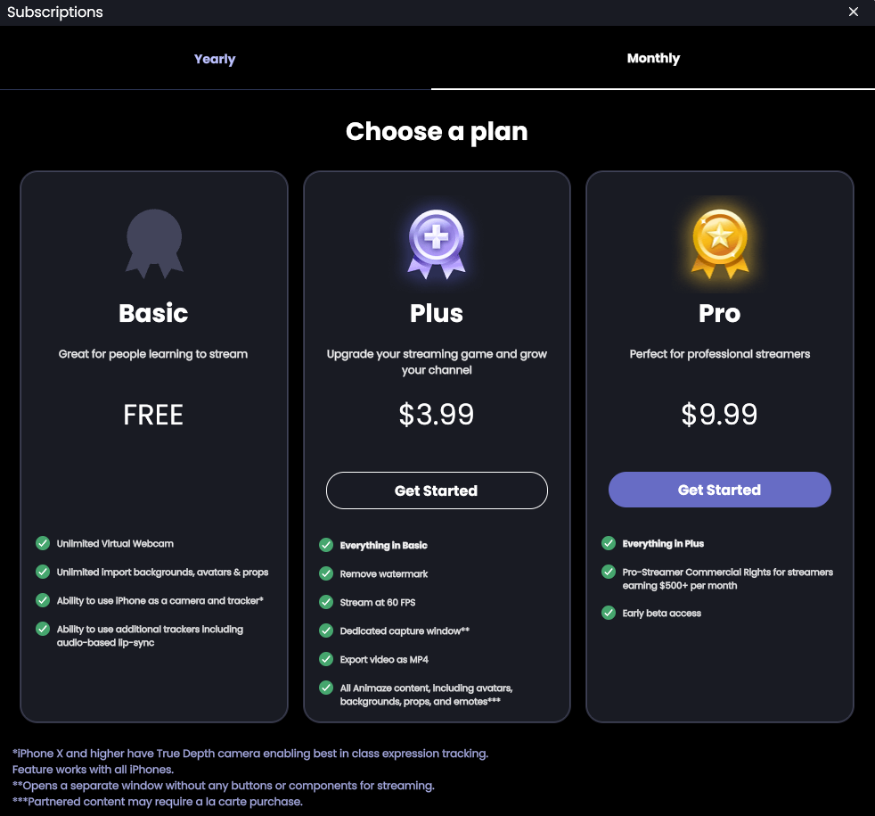
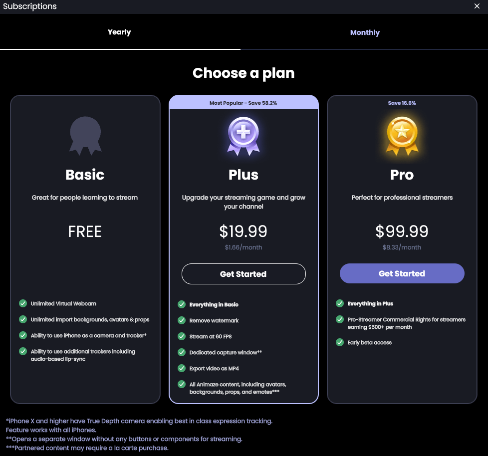

Subscriptions
The Animaze app is a free to use app available on Steam, but you can also opt for several types of subscriptions, either in a monthly subscription or annual one, in order to take your streaming to the next level!
If you’re just starting your streaming experience or just playing around with fun video-calls, you can enjoy the following features FOR FREE:
-
Unlimited streaming time
-
Unlimited Imports for backgrounds, avatars and props
-
The ability to use your iPhone as a camera and tracker
-
The ability to use additional trackers including audio-based lip-sync and many more advanced configurations
If you want to upgrade your streaming game and grow your channel, you can opt for the Animaze Plus subscription, which will grant you access to the following functionalities:
-
Everything in the free subscription
-
Remove the watermark Stream at 60 FPS
-
Dedicated capture window
-
Export video as MP4
-
Access all Animaze content, including avatars, backgrounds, props and more
The Animaze Plus subscription is $19.99 per year and $3.99 per month.
If you are a professional streamer, you can opt for the Animaze Pro subscription to get:
-
Everything in Animaze Plus
-
Pro-Streamer commercial rights for streamers earning $500+ per month/$6000 + per year
-
Early Beta Access
You will only need to get Animaze Pro if you earn more than $6000 USD per year from Animaze powered content (or $500 USD per month). To be clear, if you are planning to earn $6000+ USD per year streaming with Animaze content, you do NOT need to subscribe until you actually earn around $500 a month. We’re rooting for you!
All subscriptions are half-priced for FaceRig owners in the first billing cycle.
Monthly

Annual

If you are interested in using Animaze for commercial purposes, you can find more information here.